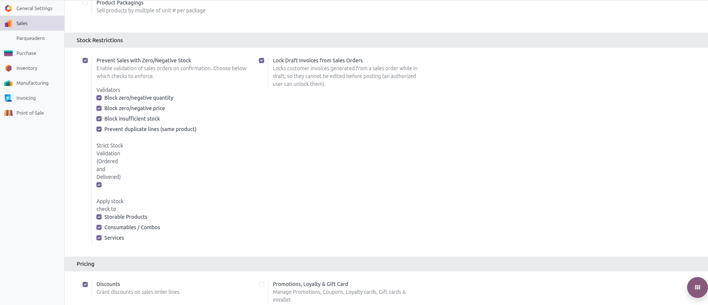
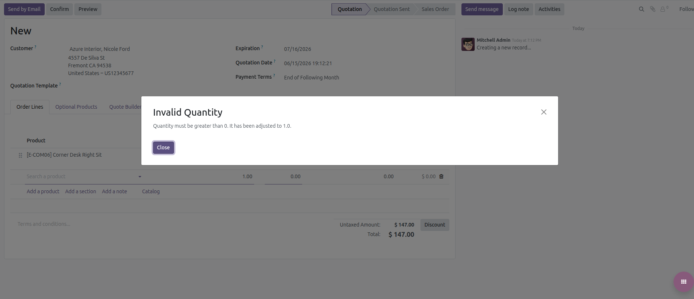
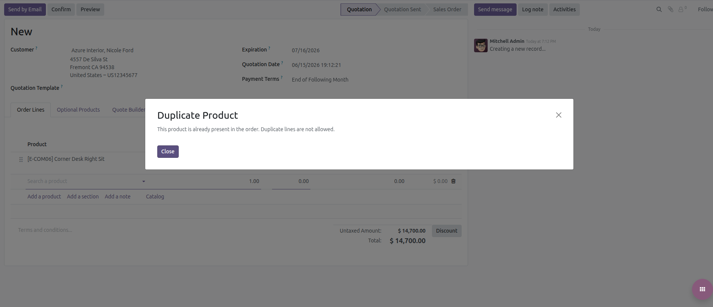
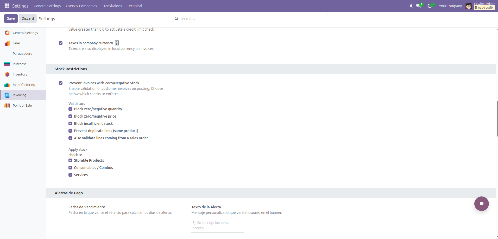
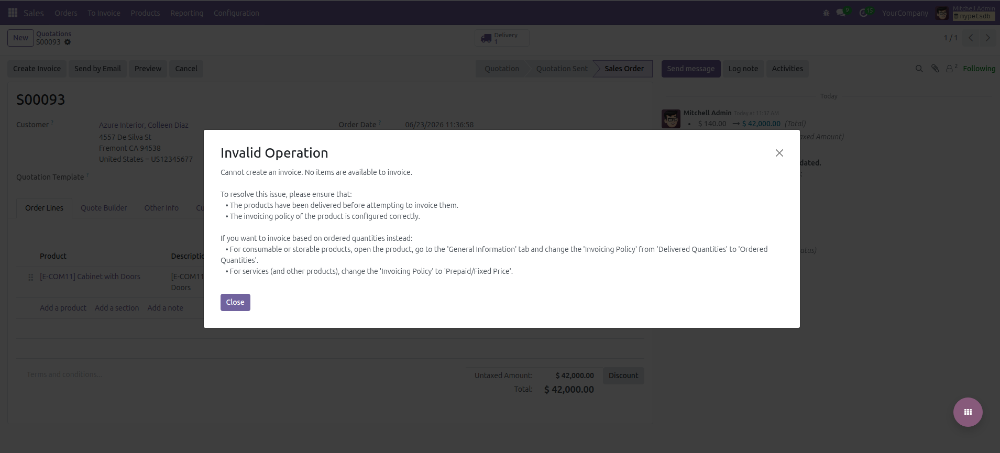

Prevent Zero Sales
Strict control of quantities, prices and stock in Sales and Invoicing

This module adds an essential validation layer to prevent common errors in the sales process. It blocks the confirmation of Sales Orders and Customer Invoices that contain lines with zero or negative quantities or prices, duplicate products, or quantities that exceed the forecasted stock. Everything is configurable per company and per product type, directly from the standard Settings screens.
Blocks the confirmation of Sales Orders and Customer Invoices when the requested quantity exceeds the forecasted stock (virtual available), with real-time warning banners while editing.
Prevents confirming orders or posting customer invoices that contain product lines with zero or negative quantities or prices, avoiding erroneous documents and accounting entries.
Optionally prevents adding the same product multiple times in Sales Orders and Invoices to ensure clean and correct data entry.
Enable restrictions independently for Sales and Invoicing, choose the affected product types (storable, consumable/combo, service) and switch between strict or policy-based validation.
Products with no available stock are removed on the fly, excess quantities are capped automatically and new rows are blocked until existing violations are fixed.
All rules are enforced again on confirmation and posting, so UI checks cannot be bypassed through imports, shortcuts or API calls.
From the standard Sales settings, the Stock Restrictions section lets you enable the validation of sales orders and choose exactly which checks to enforce: zero/negative quantity, zero/negative price, insufficient stock and duplicate lines. You can also pick which product types are affected (storable, consumables/combos, services) and lock draft invoices generated from a sales order.

When a line is left with a zero or negative quantity, the module warns the user and automatically adjusts the value to a valid minimum, preventing empty or negative order lines.

If the requested quantity exceeds the available stock, the user is notified and the quantity is capped to the maximum quantity that can actually be delivered.
When a product already present in the order is added again, the module blocks the duplicate line and asks the user to update the existing one instead, keeping the document clean.

From the Invoicing settings you can independently enable the validation of customer invoices on posting. The same validators are available — zero/negative quantity and price, insufficient stock and duplicate lines — plus the option to also validate lines coming from a sales order and to choose the affected product types.

When an invoice cannot be created because there are no items available to invoice, the module shows a clear message explaining the cause and how to solve it — deliver the products first or review the invoicing policy — avoiding empty or incorrect accounting entries.

Professional solutions for your business.